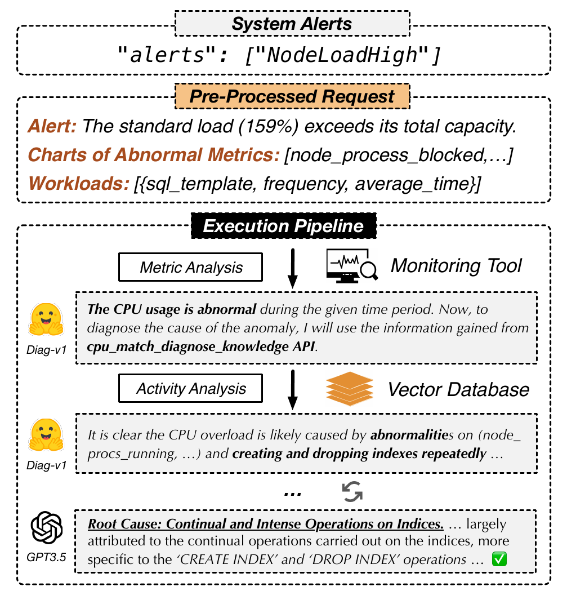

<!-- Slide 6 — Cas d'usage 1 : Diagnostic de base de données -->
<div class="slide">
    <div class="slide-content">
        <span class="slide-section-label">Cas d'usage 1</span>
        <h2>Diagnostic BDD — <em>NodeLoadHigh à 159%</em></h2>
        <div class="two-col">
            <div>
                <div class="highlight-box">
                    <strong>Scénario :</strong> Alerte <code>NodeLoadHigh</code> — charge CPU dépasse la capacité totale.
                </div>
                <ol class="steps">
                    <li class="fragment" data-fragment-index="1"><strong>Enrichissement</strong> — durée de surcharge, processus actifs, requêtes lentes</li>
                    <li class="fragment fade-left" data-fragment-index="2"><strong>Pipeline</strong> — métriques → logs → base de connaissance → recommandation</li>
                    <li class="fragment fade-left" data-fragment-index="3"><strong>Résultat</strong> — <em>Cause : créations/suppressions d'index répétées</em></li>
                </ol>
            </div>
            <div>
                <div class="figure-box">
                    
                    <figcaption>Pipeline LLMDB pour le diagnostic</figcaption>
                </div>
            </div>
        </div>
    </div>
</div>
